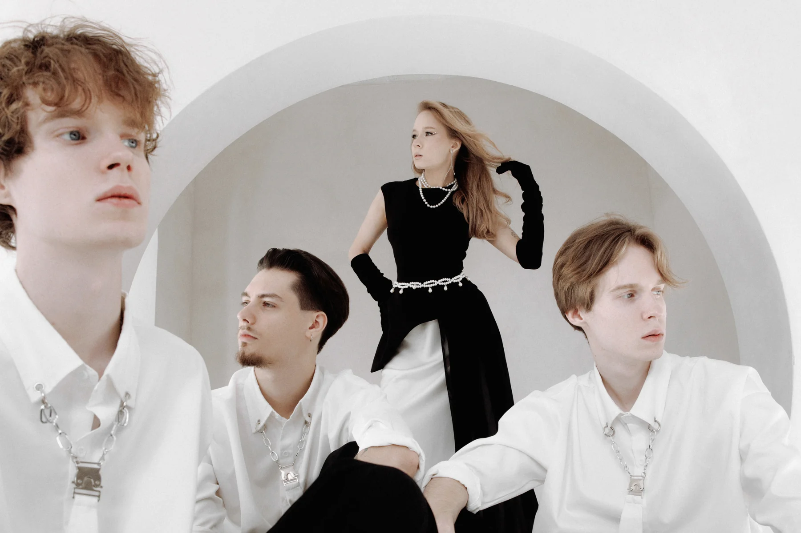
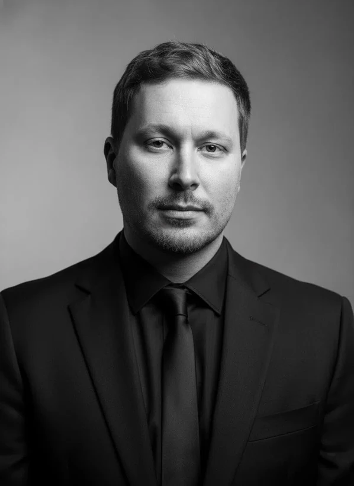

Частные события
Свадьбы, дни рождения, юбилеи и выпускные
БРЕНД и МАЙБАХ — два коллектива под руководством Виктора Велина. Поможем выбрать группу и согласуем программу под формат вашего события

Компактный, стильный
молодёжный состав

Универсальный состав
Мужской и женский вокал
ПРОМО
ФОРМАТЫ
Свадьбы, дни рождения, юбилеи и выпускные
Корпоративы, деловые ужины и форумы
Городские праздники, концерты, фестивали и спортивные события

ПОДГОТОВКА ВЫСТУПЛЕНИЯ
Продюсер и руководитель
БРЕНДА и МАЙБАХА
В музыкальной индустрии — с 2014 года. Помогаю выбрать коллектив и подготовить музыкальную программу под формат события, аудиторию и площадку
Отвечаю за репертуар и репетиции, согласование тайминга, саундчек и координацию выступления
Обсуждаем формат события, аудиторию и пожелания
Согласуем программу, тайминг и технические детали
Проводим саундчек и координируем музыкальный блок
Состав, программа и технические условия согласуются под конкретное событие. Для расчёта понадобятся дата, город и площадка, формат мероприятия и пожелания к выступлению
Продюсер и руководитель